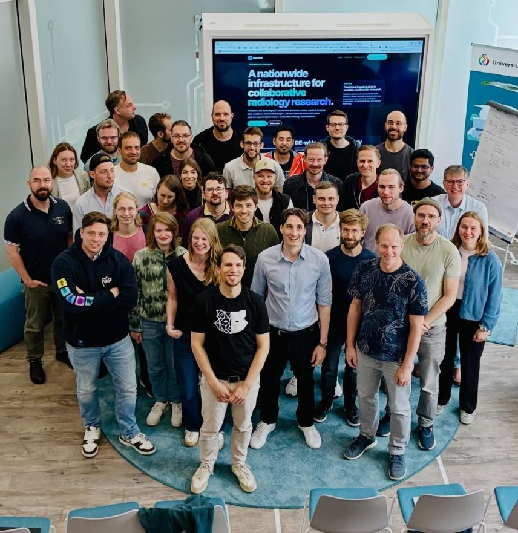
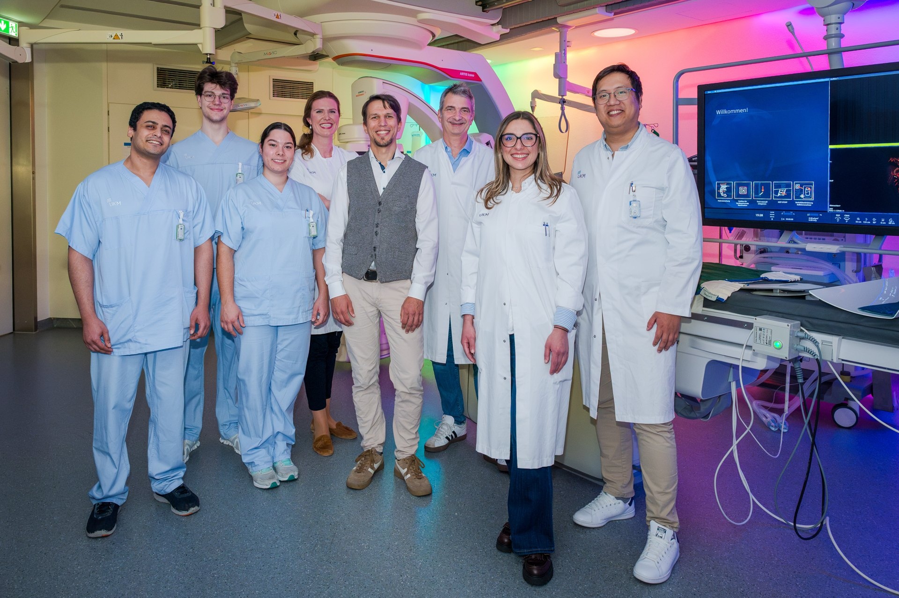

Hospital data management in the age of AI
How new methods help us to make better use of existing data in Orbis and other systems
Who am I
Christian Römer M. Sc., Scientific Associate, Clinic for Radiology, UKM



Melanoma: J Transl Med 2025
Oesophageal cancer: J Cachexia Sarcopenia Muscle 2026
ORCID 0000-0003-4386-9323
Why was the immunotherapy stopped?
And in how many of our other patients, for the same reason?
Invented example
I searched for MELD
Bei Aufnahme MELD-Score 14.
Vorstellung in der Transplantationsambulanz empfohlen.
Invented example
Schematic search mask
We store documents
Cases and forms suit administration.
Invented example
The structure ends at the document
Structured
Free text
Scanned PDF: a picture of text
Auswärtiger Befund, CT Thorax vom 28.01.2026
Raumforderung im linken Oberlappen, ca. 4 cm. Mediastinale Lymphknoten nicht vergrößert. Empfehlung: histologische Sicherung.
No text layer. Nothing in it can be searched.
Relevant information is unstructured, sometimes unparseable
Invented example
Why not structure everything?
Norway, after the move to a structured record
“free text remained the preferred method, with some exceptions”
Golburean et al., JMIR Form Res 2025
RACOON, the first template
67 items
More time than routine reading
Salg et al., npj Digital Medicine 2021
Idea: Let people write. Let machines structure.
LLM use cases in data management
Illustration, invented example
Search by meaning
Illustration
Where it fails
The same letters, only the capitals differ
nein
nicht dokumentiert
“Not documented” is different from “no”
Grothey et al., Commun Med 2025
Murin, arXiv 2026, preprint. Form lines invented
Person plus model
Correct answers
Minutes per patient
By hand, compared with pre-filled answers from a local model that a clinician checks.
38 patients, four clinicians, one centre. Neuse et al., BMC Med Inform Decis Mak 2026
How do I stay the boss?
06.10.2026
Chain of proof / Provenance
Machines fill and propose, Humans decide and check-out
Invented example
A form and its sources
Invented example
One record in RACOON-RAVEN
mit KMvom
10.02.2026.
Befund:
Raumforderung im linken Oberlappen, 38 mm, mit Kontakt zum Aortenbogen ohne sichere Infiltration. Links hilär Lymphknoten 13 mm. Kein Pleuraerguss. Keine suspekten Herde in Leber und Nebennieren. Alte Rippenserienfraktur rechts.
Beurteilung: Bronchialkarzinom links apikal,
cT2a, hiläre Lymphknotenmetastase möglich.
Keine Fernmetastasen.
Screen redrawn, invented patient, expected model answers
RACOON-RAVEN under the hood
Architecture, pipeline, prompt, checks, data model, field states, matching, review
Details below: press the down arrow
RACOON-RAVEN main a7fa7ec, 22.11.2026. Source code read, not run
Architecture
docker compose
on the host, just dev
outside, set by URL
The report text reaches this endpoint as stored. Nothing removes names or dates before.
RACOON-RAVEN main a7fa7ec: docker-compose.yml, main.py, worker/, llm/client.py
From upload to export
Pseudonym→key: pseudonym
Untersuchungsdatum→timepoint from the date
Tumorgröße (mm)→item tumor-groesse
Befund→report text for the model
Job process_input: baseline.xlsx, 12 rows
extracting, row 5 of 12
LC-009→patient LC-009, pseudonym exact
10.02.2026→day 0 after baseline: T0
Untersuchungsdatum10.02.2026 in table and reportauto accepted
Tumorgröße48 mm table, 38 mm reportconflict
Kontrastmittelja, report onlyproposed
The file is parsed at once. Each row is stored as raw cells, the original goes to S3.
Key columns, form items, answer options and the column with the report text.
One job in Postgres. The browser follows its progress live.
One call per report, two at a time. Every call is stored with its answer.
Each row finds its patient and timepoint, or becomes a review task.
Proposals, field states and history. The FHIR response is rebuilt.
Value, state and source for every item. Read from the field values.
The prompt
Checking the answer
A found quote proves the words are in the text, not that the value follows from them.
The chain of proof in the database
Start at a number in the export and follow it back to the words.
Export
38
LC-009, T0, tumour size
state accepted
source baseline.xlsx:10
Decision
38 mm accepted by a reviewer
History: proposed, then accepted, with name and time
Proposals
38 mm from the report, quote found and its position stored
48 mm from the table cell
Source
baseline.xlsx, row 10
The model call: prompt, model, raw answer
Every value in the export can be traced to the words it came from.
Invented patient. All of it is stored in one Postgres database
Field states and automatic acceptance
ingest
reviewer
reopen
A decided conflict comes back only when a source writes after the decision. Both times come from the database clock.
Matching patients and timepoints
Which patient? Pseudonym, then patient ID, then a score:
Divided by the weights of the fields the row has. From 0.6, a candidate (top 5). A person links it, even at 1.0.
Similarity with difflib: meyer and meier score 0.80, with trigrams 0.33
Which timepoint?
offset = examination date − baseline
fits if |offset − expected day| ≤ window
Several fit: the closest. None or a tie: review task.
Date mode. A fixed timepoint or a column with its code also work.
T0: 0 ± 7
T1: 90 ± 14
T2: 180 ± 14
exam on day 97
Timepoints invented; rules from services/input_matching.py and fhir/scoring.py, main a7fa7ec
Review, and what is not there yet
Conflict view: one card per distinct value, with all its sources.
Not there yet
Names and dates are not removed before the LLM call
No measurement of extraction quality
FHIR response stored, but no FHIR export
“Accept agreeing values” includes values only a model read
An emptied record is deleted with its history
No CI; tests run by hand
RACOON-RAVEN main a7fa7ec: lib/review/keymap.ts, services/review.py, services/ingest.py, llm/, api/
Why was the immunotherapy stopped?
Pneumonitis grade 3, suspected in August, stopped for good in October 2026
V. a. immuntherapieassoziierte Pneumonitis
Pembrolizumab: abgesetzt 14.08.2026
Immuntherapie wegen Atemnot beendet.
Pembrolizumab bei Pneumonitis Grad 3 dauerhaft beendet
Names only the symptom
And in how many of our other patients, for the same reason? Becomes a query.
Illustration, invented patient, not RAVEN output
Why now
Research
From 2027, the national research data centre is to get structured ePA data only.
„Befunddaten im PDF-Format, die in die ePA eingestellt wurden, werden hingegen nicht an das FDZ weitergegeben.“
Findings stored as PDF in the ePA will not be passed on.
Care
3 hours
per day on documentation, for each doctor. Nurses: 2.8 hours.
Doctors spend more time searching the record than reading what they find.
KVB FORUM 3-4/2026, ePA-Ausbaustufen
Estimate by 400 hospitals, DKI 2025. de Hoop and Neumuth 2021
Let people write.
Let machines structure.
Check where they read.
Christian Römer M. Sc.
Scientific Associate
Clinic for Radiology
May we use our own records? (no legal advice)
Patient data in chatbots
Hallucination and omission
Local models on German reports
AI scribes
Summaries in practice
Chin et al., Epic chart summary, randomised trial, 284 clinicians, 90 days, medRxiv 2026, preprint
More questions like this
Invented example (48 mm and 38 mm)
The vendor says it too


Is today’s data reliable?
of severe sepsis cases had a sepsis code
10 German hospitals
errors when values are copied by hand from records
93 papers, published 1978 to 2008
of note text is copied from earlier notes
One US health system
Schwarzkopf et al., Infection 2023
Garza et al., Int J Med Inform 2025
Steinkamp et al., JAMA Netw Open 2022
Stated facts work. Judgement is harder.
Accuracy on 300 German oncology imaging reports, in percent
Münster: 14 heart values from 497 German cardiac MRI reports, no fine-tuning.
Passweg et al., JCO Clin Cancer Inform 2026Plagwitz et al., Stud Health Technol Inform 2024
What exists today
What comes next
RACOON-RAVEN
PDF documents
Planned, not available yet
Hospital
Traceable answers
Local hardware
Structured data as a by-product
What the chain does not prove
Very experienced radiologists, correct answers
once the AI suggestion was wrong
A quote shows where the words are. It does not show that the reading is right, or that nothing is missing.
27 radiologists, 50 mammograms. Dratsch et al., Radiology 2023
Sources
Arzideh et al., JCO Clin Cancer Inform 2026
Autoriteit Persoonsgegevens, 08/2024
Ärztekammer Westfalen-Lippe, MB.NRW 2025 Nr. 184
Chanda et al. (CORA), arXiv 2608.00817, preprint
Chin et al., medRxiv 2026.08.26.26361496, preprint
de Hoop and Neumuth, Appl Clin Inform 2021
Dedalus DIREKT 1/2024 and 2/2024
Dedalus, KI in ORBIS, brochure, 06/2026
Dedalus and Corti, press release, 22.10.2026
DKI, Bürokratiebelastung im Krankenhaus, 09/2025
Dratsch et al., Radiology 2023
Eryılmaz et al., J Med Internet Res 2026, e92413
Garza et al., Int J Med Inform 2025
GDNG section 6; GV. NRW. 2025 S. 530
Golburean et al., JMIR Form Res 2025
Google LangExtract, GitHub 2026
Grolleau et al., JAMA Netw Open 2026
Grothey et al., Commun Med 2025
HHU Düsseldorf, KI:connect, read 11/2026
IHK Nord Westfalen, 02/2026
Kahl et al., npj Health Systems 2026
KVB FORUM 3-4/2026
LLM-AIx, medRxiv 2024; npj Precision Oncology 2025
MeDIC Münster, Study module, read 11/2026
Murin, arXiv 2606.05970, preprint
Neuse et al., BMC Med Inform Decis Mak 2026
Nowak et al., arXiv 2604.22768, preprint
Passweg et al., JCO Clin Cancer Inform 2026
Plagwitz et al., Stud Health Technol Inform 2024
Rotenstein et al., JAMA 2026
Salg et al., npj Digital Medicine 2021
Schwarzkopf et al., Infection 2023
Shah et al. (ChatEHR), arXiv 2602.00074, preprint
Steinkamp et al., JAMA Netw Open 2022
UCLA scribe trial, NEJM AI 2025
University of Münster, UniGPT terms, read 11/2026
Zhao et al. (CliniQ), arXiv 2502.06252, preprint